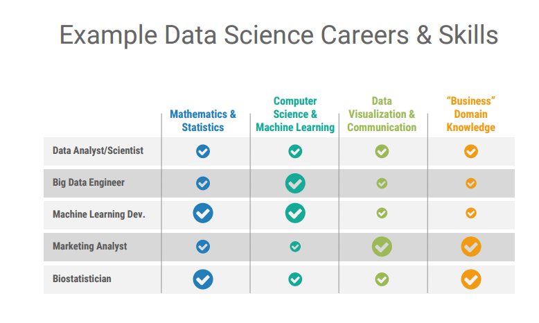

Hello World.
First and foremost, I want to say thanks for taking a look. Hope you stick around.
I bought this domain about a week ago and figure it's probably about time that I do something with it. To put it plainly, the purpose of this blog is twofold:
- To give myself a platform to share side-projects that I work on, with a focus on data and hobby programming
- To supplement reviews that I do on Letterboxd beyond initial impressions and a rating on a 5-point scale
To that end, I'd like to use this first post to give a bit more context on the "why?"
I was studying to be an actuary for a good while, but seriously struggled with passing the exams. After failing FM for my 2nd time, I began losing interest in all things risk, and swapped majors. I wound up graduating from a good school with a B.S. in Economics, but along the way took Calc 1-4, Linear Algebra, Probability, Inferential and Theoretical Statistics, Intro Programming, Discrete Math, and Data Structures to supplement what I lovingly refer to as "a degree in critical thinking." (Because for the life of me, I couldn't tell you what a Phillip's Curve is.)
I got hired on out of school as a Data analyst for a certain Detroit-based mortgage company, and found myself in an overwhelmingly supportive environment for growth. I leaned on my background in Computer Science and picked up Python to do some report automation and to take myself out Excel. I hated Excel. I was cocooned in a team full of brilliant and supportive mentors, and spent the better part of a year learning SQL tuning and optimization, how to 'talk the talk' and better-inform the decisions of my business partners, building out Tableau dashboards, and started dabbling in Machine Learning. Before long, I got promoted to Senior Data Analyst. This thing was starting to shape up.
|  | | :--: | | All image/content credit to @BecomingDataSci |
So I spent October 6th through the 9th of this year with my good friend Tyler at PyData DC. I learned a ton about how little I actually know about data science by meeting a lot of bright people and listening to a host of fantastic talks. Not least of which was a talk by Renee of the popular blog "Becoming a Data Scientist" which, honestly, was one of those "exactly what I needed to hear at that point in my life" kind of talks. In a nutshell-- and I highly recommend that you keep an eye out for it when it gets posted on the PyData YouTube channel-- she's boiled down spades of wisdom into a wonderful sort of choose-your-own-adventure for navigating where you are today, whatever that means to you, to this exciting, ambiguous "Data Scientist" role, and every characterization in between.
For the better part of the beginning of the year, I was near-addicted to Coursera. I burned through Andrew Ng's Machine Learning course, studied Data Visualization and Communication with Tableau, explored meta-cognitive behavior with 'Learning How to Learn'. I have, no exaggeration, another 20+ courses bookmarked. Additionally, I probably have a few dozen books that I've picked up on everything from graph theory to making games in Python, many of which I have yet to touch.
Suffice it to say, I'm sitting on a mountain of things I'm curious about. But for a whole host of reasons, call it the Paradox of Choice, I haven't done much more than skimmed the foreword for the majority of these. More to the point, though, I haven't taken the time to engage with the material in a meaningful way-- to share the things that I'm finding and creating. Thus, here we are.
On the other hand, in the past couple of years I've developed a real penchant for movies. What began compensation for the embarrassment in being caught red-handed in conversations never having seen Saving Private Ryan, Goodfellas, or Three Men and a Baby, graduated to means of developing a strong trivia category, to an addiction that would make Patton Oswalt proud. I think that during a typical week, I wind up watching anywhere from 3-5, but have also been known to do so many in a day if left alone for long enough.
But same story, right? I, like I'm sure many of you, have a formidable backlog of things that I want to get around to watching. Between Netflix, Hulu, Amazon Prime, a Family Video 5 minutes away from me ($.50 Blu-Ray rentals. Who knew??), and what's basically a growing junk drawer of things I write down to try and wrestle into some amorphous queuing system.
To confound that aimlessness some more, upon learning about my viewing habits, a friend of mine showed up with a suitcase full of movies that he'd collected over his bout with the same issue-- a very pricey, albeit apathetic game of Hot Potato. And while I do make an effort to get thoughts down about the things that I'm watching (link to the right), those are often quippy first impressions and little more.
In a lot of ways, I think it'd be appropriate to characterize my mass organizing, cataloging, and consumption as an addiction-- my frantic attempt at 'optimization' of potential experiences given the constant of time. Ultimately though, I hope this blog becomes is a way of course-correcting, an avenue to give things a more deliberate thought to the tune of at least a couple posts a month. I've never taken a stab at blogging or having much of an Internet presence in general, so if any of this sounds remotely interesting to you, please engage with it, so I can get better at writing things worth reading.
Cheers,
-Nick